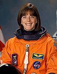

Lyndon B. Johnson Space Center
Houston, Texas 77058
|
National Aeronautics and Space Administration Lyndon B. Johnson Space Center Houston, Texas 77058 |
 |
Biographical Data |
||
Barbara Radding Morgan
NASA Astronaut (FORMER)
PERSONAL DATA: Born November 28, 1951, in Fresno, California. Married to Clay Morgan. They have two sons. Barbara plays flute and enjoys reading, hiking, swimming, skiing, and her family.
EDUCATION: Hoover High School, Fresno, California, 1969; B.A., Human Biology, with distinction, Stanford University, 1973; Teaching Credential, College of Notre Dame, Belmont, California, 1974; Honorary Doctorate of Science from Boise State University, 2008.
ORGANIZATIONS: National Education Association; Idaho Education Association; National Council of Teachers of Mathematics; National Science Teachers Association; International Reading Association; International Technology Education Association; Challenger Center for Space Science Education.
SPECIAL HONORS: NASA Space Flight Medal; Challenger Center President George H.W. Bush Award; VFW National Space Award; NEA Friend of Education Award; AARP Inspire Award; NSTA Presidential Citation; USA Today Citizen of the Year. Other awards include: NASA Headquarters Special Service Award; NASA Public Service Group Achievement Award; Idaho Fellowship Award; University of Idaho Presidents Medallion Award; ITEA Lawrence Prakken Award; Challenger Center for Space Science Education Challenger 7 Award; National Space Society Space Pioneer Award for Education; Los Angeles Chamber of Commerce Wright Brothers Kitty Hawk Sands of Time Education Award; Women in Aerospace Education Award; National PTA Honorary Lifetime Member; Phi Beta Kappa.
EXPERIENCE: Morgan began her teaching career in 1974 on the Flathead Indian Reservation at Arlee Elementary School in Arlee, Montana, where she taught remedial reading and math. From 1975-1978, she taught remedial reading/math and second grade at McCall-Donnelly Elementary School in McCall, Idaho. From 1978-1979, Morgan taught English and science to third graders at Colegio Americano de Quito in Quito, Ecuador. From l979-l998, she taught second, third, and fourth grades at McCall-Donnelly Elementary School.
NASA EXPERIENCE: Morgan was selected as the backup candidate for the NASA Teacher in Space Program on July 19, 1985. From September 1985 to January 1986, Morgan trained with Christa McAuliffe and the Challenger crew at NASA's Johnson Space Center, Houston, Texas. Following the Challenger accident, Morgan assumed the duties of Teacher in Space Designee. From March 1986 to July 1986, she worked with NASA, speaking to educational organizations throughout the country. In the fall of 1986, Morgan returned to Idaho to resume her teaching career. She taught second and third grades at McCall-Donnelly Elementary and continued to work with NASA's Education Division. Her duties as Teacher in Space Designee included public speaking, educational consulting, curriculum design, and serving on the National Science Foundation's Federal Task Force for Women and Minorities in Science and Engineering.
Selected by NASA as a mission specialist and NASA's first Educator Astronaut in January 1998, Morgan reported to the Johnson Space Center in August 1998. After completing two years of training and evaluation, she was assigned technical duties in the Astronaut Office Space Station Operations Branch. She then served in the Astronaut Office CAPCOM Branch, working in Mission Control as prime communicator with on-orbit crews. She also served in the Robotics Branch of the Astronaut Office. Morgan has logged over 305 hours in space, completing her first space flight in 2007 as a mission specialist on the crew of STS-118, an assembly mission to the International Space Station.
Barbara Morgan retired from NASA in August, 2008, to become the Distinguished Educator in Residence at Boise State University, with a dual appointment in the colleges of Engineering and Education. She continues to make public appearances.
SPACE FLIGHT EXPERIENCE: STS-118 (August 8-21, 2007) was the 119th space shuttle flight, the 22nd flight to the space station, and the 20th flight for Endeavour. During the mission, Endeavour's crew successfully added a truss segment, a new gyroscope and external spare parts platform to the International Space Station. They also activated a new system that enables docked shuttles to draw electrical power from the station, extending missions to the outpost. A total of four spacewalks were performed by three crewmembers. Endeavour carried 5,000 pounds of equipment and supplies to the station and returned to Earth with 4,000 pounds of scientific materials and used equipment. Morgan served as educator, loadmaster, shuttle and station robotic arm operator, and flight deck crewmember for entry and landing. Traveling 5.3 million miles in space, the STS-118 mission was completed in 12 days, 17 hours, 55 minutes and 34 seconds.
JULY 2010
This is the only version available from NASA. Updates must be sought direct from the above named individual.